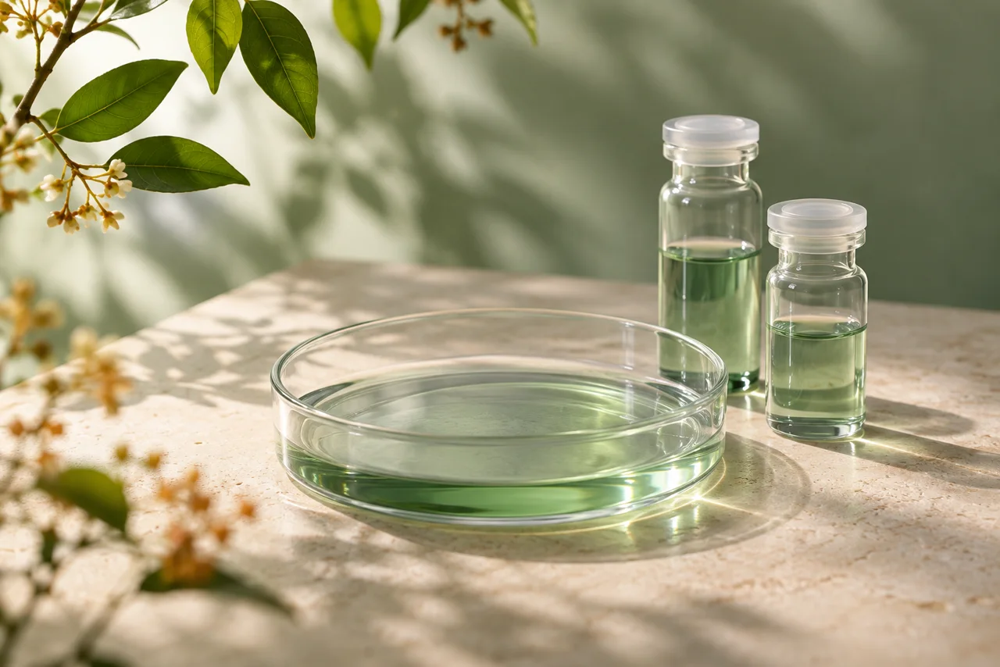

跳转到试验检索
临床试验
检索
探索试验
数据说明
公开数据 · 自由探索
让临床研究，
更清晰可见。
每一项研究，都是探索的开始。
在公开的药物临床试验中，找到你关注的方向。
正在读取公开数据…

从细微之处，开启探索。
关键词
搜索试验
清除筛选
研究一览
正在为你整理研究信息…
排序方式
最新登记
最早登记
导出结果
临床试验查询结果，点击研究项目查看详情
研究项目
适应症
试验阶段
招募状态
正在读取研究索引…
返回研究一览
试验详情
复制链接